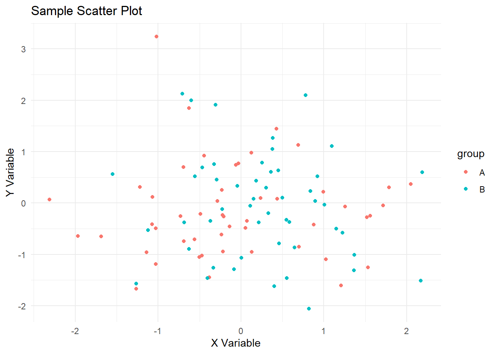

How to use renv for reproducible data science in R.
Published
April 27, 2026
Virtual environments ensure that your code runs consistently regardless of where or when it’s executed. They allow you to manage project-specific dependencies without affecting your global R or Python installations.
I’ve used R for years without virtual environments and nothing has broken. Why should I care about them now?
For one-time analyses, I install any additional packages I need, run my code, and move on. Using {renv} feels like overhead with negligible payoff. Only value is if you need to exactly reproduce your results later.
For recurring analyses, I may return to a project and find that some packages need to be installed. Others have been updated, but this is easily resolved. Again, the benefits of {renv} don’t seem to justify the effort. There is the possibility of subtle drift in results, but that rarely matters. On the other hand, if model defaults change, or factor handling changes, or plot scales or themes change, that can be a real issue.
For collaborative projects, consistent package versions start to make sense. If I upgrade a package to use a new function, that forces my collaborators to upgrade as well.
For deployment to Posit Cloud, builds use whatever package versions are current. If I want to ensure that my app continues to work as I intend, I need to use {renv} to lock in the versions.
Generally, the decision framework is use {renv} when:
You need consistency across time (recurring reports)
Multiple people are involved
You deploy the project
You may need to reproduce results exactly
Skip it when:
Project is exploratory or one-off
Speed matters more than reproducibility
You’re the only user and stakes are low
R: renv (The Standard Approach)
{renv} is the recommended tool for managing R package environments. It creates a project-local library and generates a renv.lock file that captures exact package versions and sources.
Basic Workflow
Initialize: Set up renv for your project
Install Packages: Add packages as needed during development
Snapshot: Record current package state to renv.lock
Restore: Recreate the environment from renv.lock on another machine
Core Commands
Initialize renv in your project directory:
# One-time setup per projectrenv::init()
Install packages during development:
# Install packages as you workinstall.packages("dplyr")install.packages("ggplot2")
Snapshot your current environment:
# Record exact versions to renv.lockrenv::snapshot()
Restore environment on another machine:
# Install packages exactly as in renv.lockrenv::restore()
How renv Works
Creates a renv/ directory with project-specific package installations
Generates renv.lock with exact versions, sources, and dependencies
Modifies .Rprofile to automatically activate the local environment
Provides tools for managing package conflicts and updates
Best Practices for R Projects
Always commit renv.lock to version control
Never commit the renv/library/ directory (it’s large and machine-specific)
Run renv::snapshot() after installing new packages
Use renv::status() to check for discrepancies between lockfile and current environment
Lockfiles and Reproducibility
Lockfiles are the key to reproducible environments. They record exact versions and sources.
R: renv.lock
Contains: - Package names and versions - Package sources (CRAN, GitHub, local) - Dependency relationships - R version information
Python: requirements.txt vs. Poetry
requirements.txt (basic):
pandas==2.0.3
numpy==1.24.3
matplotlib==3.7.1
Poetry lockfile (comprehensive): - Exact versions and hashes - Dependency resolution details - Platform-specific information
Version Control Strategy
Commit lockfiles to Git
Never commit virtual environment directories
Use CI to validate environment restoration
Tag releases with specific lockfile versions
Hands-on Examples
Let’s create a simple cross-language data analysis project.
Our R script performs basic data exploration and visualization:
Show the code
# Load required packageslibrary(ggplot2)# Generate sample dataset.seed(123)df <-data.frame(x =rnorm(100),y =rnorm(100),group =sample(c("A", "B"), 100, replace =TRUE))# Create a plotp <-ggplot(df, aes(x = x, y = y, color = group)) +geom_point() +labs(title ="Sample Scatter Plot", x ="X Variable", y ="Y Variable") +theme_minimal()print(p)

Show the code
# Save the plotggsave("R/plot.png", p, width =6, height =4)# Print summarysummary(df)
x y group
Min. :-2.30917 Min. :-2.0532 Length:100
1st Qu.:-0.49385 1st Qu.:-0.8011 Class :character
Median : 0.06176 Median :-0.2258 Mode :character
Mean : 0.09041 Mean :-0.1075
3rd Qu.: 0.69182 3rd Qu.: 0.4678
Max. : 2.18733 Max. : 3.2410
Shiny App for Deployment
For demonstration purposes, we’ve included a simple Shiny app:
Virtual environments transform data science workflows from fragile, machine-dependent processes to robust, reproducible systems. By isolating dependencies and capturing exact versions in lockfiles, you ensure that your analyses will work consistently across different environments and over time. Whether you’re an R user dipping into Python or maintaining complex multi-language projects, mastering virtual environments will make you a more effective and confident data scientist.
The examples in this tutorial provide a solid foundation—start by applying renv to your next R project, and you’ll quickly see the benefits in practice.
Source Code
---title: "Virtual Environments"subtitle: "with **renv**"date: 2026-04-27categories: [gt, tables]description: | How to use **renv** for reproducible data science in R.format: html: toc: true toc-depth: 2 code-fold: trueexecute: echo: true warning: false error: false---Virtual environments ensure that your code runs consistently regardless of where or when it's executed. They allow you to manage project-specific dependencies without affecting your global R or Python installations. I've used R for years without virtual environments and nothing has broken. Why should I care about them now?- For **one-time** analyses, I install any additional packages I need, run my code, and move on. Using **{renv}** feels like overhead with negligible payoff. Only value is if you need to exactly reproduce your results later.- For **recurring** analyses, I may return to a project and find that some packages need to be installed. Others have been updated, but this is easily resolved. Again, the benefits of **{renv}** don't seem to justify the effort. There is the possibility of subtle drift in results, but that rarely matters. On the other hand, if model defaults change, or factor handling changes, or plot scales or themes change, that can be a real issue.- For **collaborative** projects, consistent package versions start to make sense. If I upgrade a package to use a new function, that forces my collaborators to upgrade as well.- For **deployment** to Posit Cloud, builds use whatever package versions are current. If I want to ensure that my app continues to work as I intend, I need to use **{renv}** to lock in the versions.Generally, the decision framework is use **{renv}** when:- You need consistency across time (recurring reports)- Multiple people are involved- You deploy the project- You may need to reproduce results exactlySkip it when:- Project is exploratory or one-off- Speed matters more than reproducibility- You’re the only user and stakes are low# R: renv (The Standard Approach)**{renv}** is the recommended tool for managing R package environments. It creates a project-local library and generates a `renv.lock` file that captures exact package versions and sources.## Basic Workflow1. **Initialize**: Set up renv for your project2. **Install Packages**: Add packages as needed during development3. **Snapshot**: Record current package state to `renv.lock`4. **Restore**: Recreate the environment from `renv.lock` on another machine## Core CommandsInitialize renv in your project directory:```r# One-time setup per projectrenv::init()```Install packages during development:```r# Install packages as you workinstall.packages("dplyr")install.packages("ggplot2")```Snapshot your current environment:```r# Record exact versions to renv.lockrenv::snapshot()```Restore environment on another machine:```r# Install packages exactly as in renv.lockrenv::restore()```## How renv Works- Creates a `renv/` directory with project-specific package installations- Generates `renv.lock` with exact versions, sources, and dependencies- Modifies `.Rprofile` to automatically activate the local environment- Provides tools for managing package conflicts and updates## Best Practices for R Projects- Always commit `renv.lock` to version control- Never commit the `renv/library/` directory (it's large and machine-specific)- Run `renv::snapshot()` after installing new packages- Use `renv::status()` to check for discrepancies between lockfile and current environment# Lockfiles and ReproducibilityLockfiles are the key to reproducible environments. They record exact versions and sources.## R: renv.lockContains:- Package names and versions- Package sources (CRAN, GitHub, local)- Dependency relationships- R version information## Python: requirements.txt vs. Poetry**requirements.txt** (basic):```pandas==2.0.3numpy==1.24.3matplotlib==3.7.1```**Poetry lockfile** (comprehensive):- Exact versions and hashes- Dependency resolution details- Platform-specific information## Version Control Strategy- Commit lockfiles to Git- Never commit virtual environment directories- Use CI to validate environment restoration- Tag releases with specific lockfile versions# Hands-on ExamplesLet's create a simple cross-language data analysis project.## Project Structure```virtual_environs_tutorial/├── tutorial.qmd├── R/│ ├── analysis.R│ └── shiny_app.R├── python/│ ├── app.py│ └── requirements.txt├── renv.lock└── .github/ └── workflows/ └── ci.yml```## R Analysis ExampleOur R script performs basic data exploration and visualization:```{r}#| label: r-analysis#| echo: true# Load required packageslibrary(ggplot2)# Generate sample dataset.seed(123)df <-data.frame(x =rnorm(100),y =rnorm(100),group =sample(c("A", "B"), 100, replace =TRUE))# Create a plotp <-ggplot(df, aes(x = x, y = y, color = group)) +geom_point() +labs(title ="Sample Scatter Plot", x ="X Variable", y ="Y Variable") +theme_minimal()print(p)# Save the plotggsave("R/plot.png", p, width =6, height =4)# Print summarysummary(df)```## Shiny App for DeploymentFor demonstration purposes, we've included a simple Shiny app:```{r}#| label: shiny-app#| eval: false#| echo: truelibrary(shiny)library(ggplot2)ui <-fluidPage(titlePanel("Virtual Environment Demo"),sidebarLayout(sidebarPanel(sliderInput("n", "Number of points:", 10, 1000, 100),selectInput("color", "Color:", c("blue", "red", "green")) ),mainPanel(plotOutput("plot")) ))server <-function(input, output) { output$plot <-renderPlot({set.seed(123) df <-data.frame(x =rnorm(input$n), y =rnorm(input$n))ggplot(df, aes(x, y)) +geom_point(color = input$color) +theme_minimal() })}shinyApp(ui, server)```# Deployment to Posit CloudPosit Cloud provides an excellent platform for deploying R applications with managed environments.## Deploying a Shiny App1. **Prepare Your App**: Ensure all dependencies are in `renv.lock`2. **Push to GitHub**: Commit your code and lockfiles3. **Create Posit Cloud Project**: - Go to Posit Cloud - Create "New Project from Git Repository" - Enter your repository URL4. **Configure Environment**: Posit Cloud will automatically restore from `renv.lock`5. **Publish**: Use the publish button to make your app publicly accessible## Benefits for Deployment- **Managed Infrastructure**: No server maintenance- **Automatic Scaling**: Handles traffic spikes- **Environment Consistency**: Uses your lockfile for exact reproduction- **Easy Sharing**: Share links with collaborators or for presentations# GitHub Actions for CI/CDGitHub Actions can automate environment setup and testing.## Basic CI Workflow# yaml```{text}name: R + Python CIon: [push, pull_request]jobs: test: runs-on: ubuntu-latest strategy: matrix: r-version: [4.3] python-version: [3.10] steps: - uses: actions/checkout@v4 - name: Setup R uses: r-lib/actions/setup-r@v2 with: r-version: ${{ matrix.r-version }} - name: Setup Python uses: actions/setup-python@v4 with: python-version: ${{ matrix.python-version }} - name: Restore R environment run: | R -e 'install.packages("renv")' R -e 'renv::restore()' - name: Setup Python environment run: | python -m venv .venv source .venv/bin/activate pip install -r python/requirements.txt - name: Run R tests run: Rscript R/analysis.R - name: Run Python tests run: | source .venv/bin/activate python python/app.py```## CI Benefits- **Automated Testing**: Ensures code works in clean environments- **Environment Validation**: Confirms lockfiles are correct- **Cross-platform Testing**: Test on multiple R/Python versions- **Deployment Triggers**: Automatically deploy on successful tests# Presentation Tips for R Meetup## Structure Your Talk1. **Start with Problems**: Show real-world dependency conflicts2. **Explain Concepts**: Use simple analogies (apartments vs. houses)3. **Live Demo**: Initialize renv, snapshot, restore on "fresh" machine4. **Show Cross-language**: Demonstrate reticulate integration5. **Deployment Demo**: Deploy Shiny app to Posit Cloud6. **Q&A**: Prepare for common questions## Key Takeaways for Audience- Virtual environments are essential for reproducible data science- renv makes R environment management straightforward- Python's venv + requirements.txt is the minimum viable approach- Lockfiles are your insurance policy for deployment- Start small: use renv on your next R project## Common Questions- **"Isn't this overkill for small projects?"** No, the overhead is minimal and prevents future headaches- **"What about conda?"** Great for complex scientific stacks, but renv/venv are simpler for most R/Python work- **"How do I handle system dependencies?"** Virtual environments handle packages, but system libraries (like GDAL) need separate management# Further Resources- [renv Documentation](https://rstudio.github.io/renv/)- [Poetry Guide](https://python-poetry.org/docs/)- [reticulate Package](https://rstudio.github.io/reticulate/)- [Posit Cloud Deployment](https://docs.posit.co/posit-cloud/)- [GitHub Actions for R](https://github.com/r-lib/actions)# ConclusionVirtual environments transform data science workflows from fragile, machine-dependent processes to robust, reproducible systems. By isolating dependencies and capturing exact versions in lockfiles, you ensure that your analyses will work consistently across different environments and over time. Whether you're an R user dipping into Python or maintaining complex multi-language projects, mastering virtual environments will make you a more effective and confident data scientist.The examples in this tutorial provide a solid foundation—start by applying renv to your next R project, and you'll quickly see the benefits in practice.